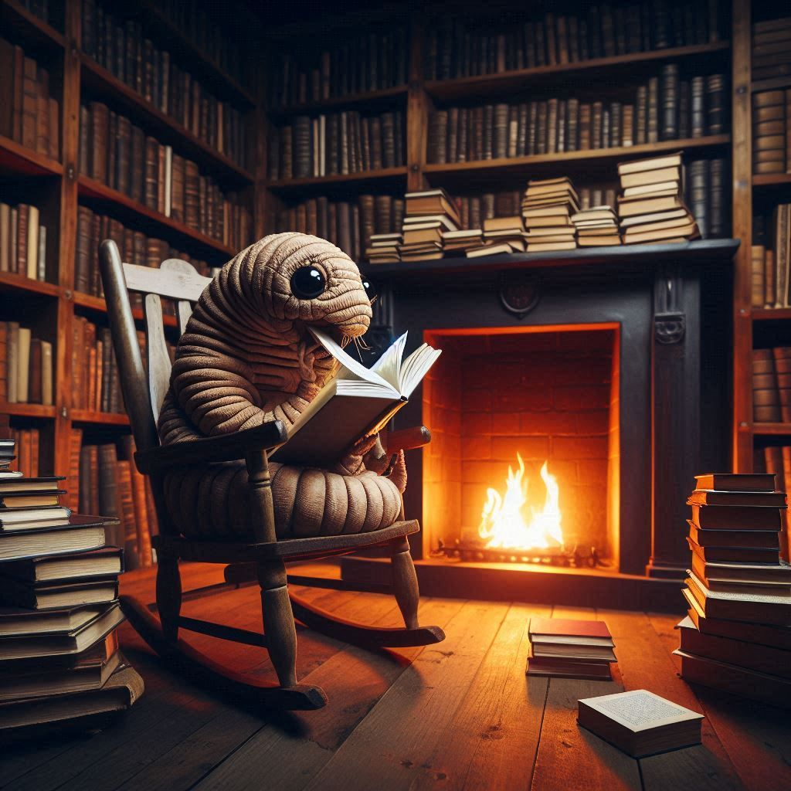

--- 
layout: layout_header.njk
title: Home Page Book Moth's club
---

<section class="about-us">
    <div class="about-us__grid">
        <div class="about-us__item about-us__item--image1">
          
        </div>
        <div class="about-us__item about-us__item--text">
          <h1 class="about-us__main-title">Welcome to Book Moth’s Club! 🦋</h1>
          <p class="about-us__text"> We’re a quirky community of book lovers who just can’t get enough—literally. Like our namesake, we devour books, page by page...though we promise we’re reading, not actually eating them!</p>
          <p class="about-us__text">Whether you’re a lifelong bookworm or a curious newbie, you’ll find a cozy spot here. Join us to explore new reads, swap recommendations, and enjoy a good laugh (and maybe a nibble!) with fellow “book moths.”
          Ready to flutter into your next favorite story?.</p>
        </div>
        <div class="about-us__item about-us__item--text">
          <h2 class="about-us__title">History:</h2>
          <p class="about-us__text"> Legend has it that our book club was born on a dark and stormy night when a particularly ambitious worm named Wally decided to take a bite out of the latest bestseller. As Wally munched away, he inadvertently sparked a revolution among fellow book lovers who were tired of their beloved tomes being turned into moth snacks. Thus, our club was formed—a sanctuary for readers seeking refuge from the perils of the literary food chain! We gather to discuss books, share snacks (that are definitely not made of paper), and plot ways to keep our shelves safe from any potential infestations.</p>
        </div>
        <div class="about-us__item about-us__item--image2">
          
        </div>
    </div>
  </section>


    